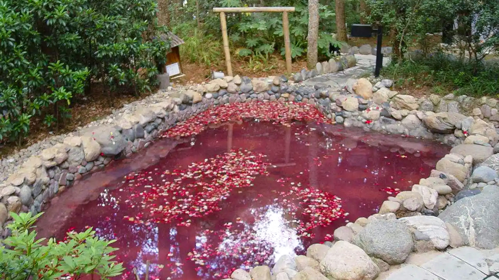
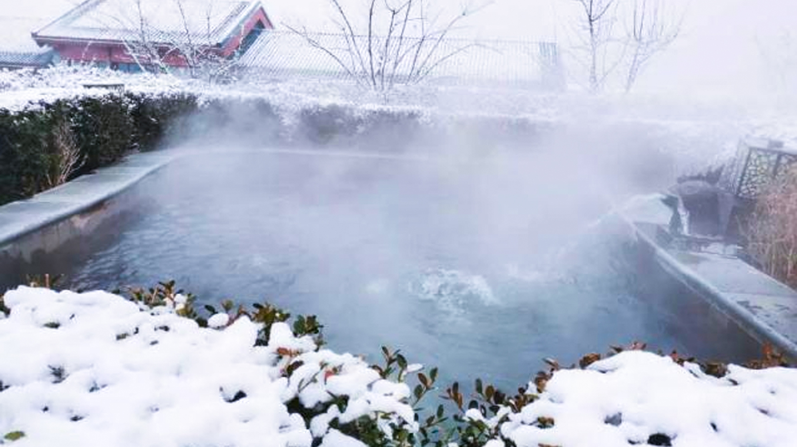
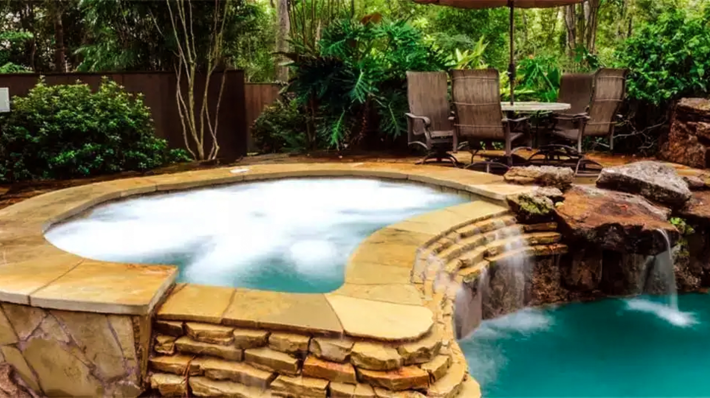
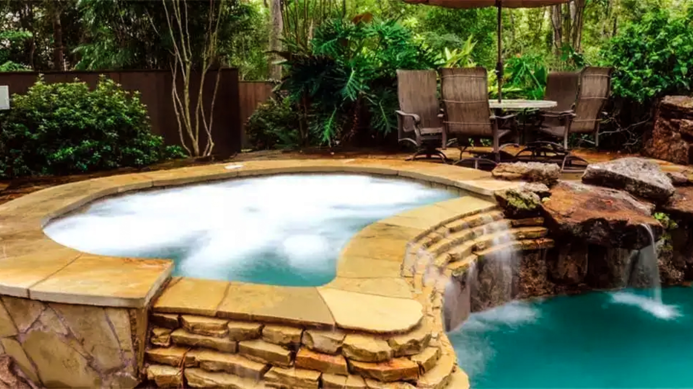
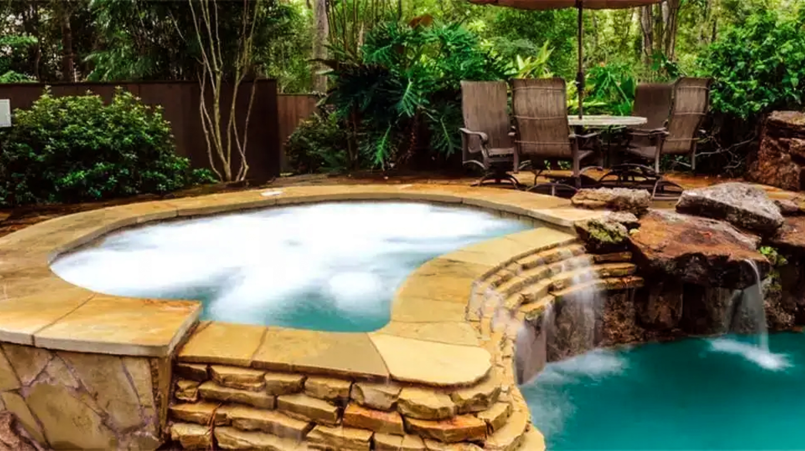
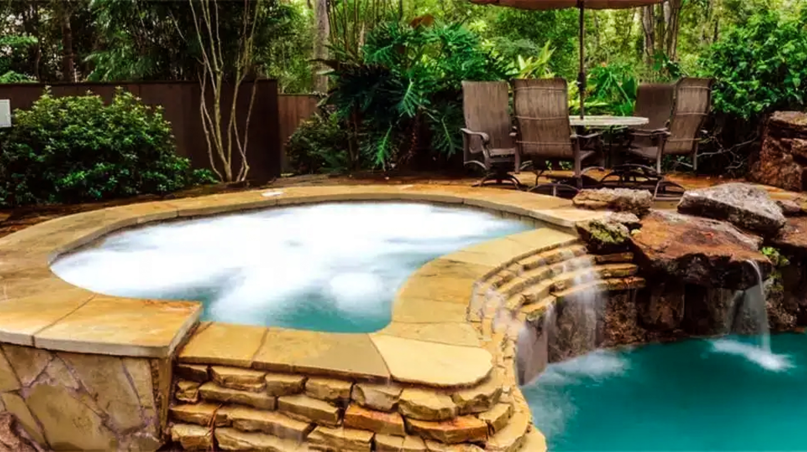

 


云南大学

安宁温泉又名碧玉泉，坐落在安宁市境玉泉山麓，螳螂川（河）畔，与曹溪名刹隔江相望。温泉南面，数十公尺长的环云崖矗立路旁河边，树藤交错，洞室螺螺，历代韵土的摩岩石刻荟萃成海。
安宁温泉相传在1400多年前东汉时期已发现。这里山川秀丽、盆塘泉水、深可及腹。由于泉水水色湛绿，光洁如碧玉，故有“碧玉泉”之称。 如今，安宁温泉区内有民族风格的宾馆、设备完备的疗养院、大型商场及饭店，是鸟语花香的旅游胜地。据悉，安宁温泉疗养院还有高中频电疗、静电治疗、光疗、按摩、针灸、脉冲水疗按摩机等，水疗有全身浸浴、半身浸浴、上行沐浴、周围淋浴、雨状浴、雾状浴等，成为集休闲、养生、治疗为一体的温泉度假区。
严寒的冬日里，泡在温暖的温泉里，去除身上的疲惫与烦恼，全身心都放松下来，简直不要太爽！并且还能养生治疗，一石二鸟。果然，冬天和泡温泉是最搭的。
云南大学地球科学学院@2021~2022